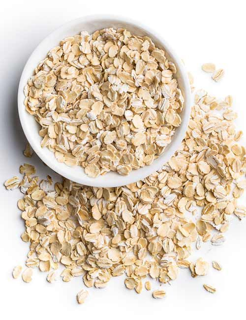

Clasifica los alimentos



GLUCOCONTROL es una plataforma educativa diseñada para brindar información clara y profesional a personas con Diabetes Mellitus Tipo 2.
El adecuado control de la diabetes requiere educación constante, alimentación equilibrada, actividad física regular y seguimiento médico.
Aquí encontrarás orientación nutricional y acceso a especialistas capacitados.
La Diabetes Mellitus Tipo 2 es una enfermedad crónica caracterizada por resistencia a la insulina y elevación persistente de glucosa en sangre.
Si no se controla adecuadamente puede provocar complicaciones cardiovasculares, daño renal, neuropatías y problemas visuales.
En esta condición las células del cuerpo no responden correctamente a la insulina, dificultando la entrada de glucosa a los tejidos.
Factores como sobrepeso, sedentarismo y predisposición genética influyen en su desarrollo.
Una alimentación equilibrada ayuda a mantener niveles estables de glucosa y prevenir complicaciones.
Se recomienda priorizar verduras, frutas en porciones controladas, cereales integrales y proteínas magras.
La fibra dietética retrasa la absorción de glucosa, ayudando a evitar picos bruscos.
Se encuentra en leguminosas, frutas, verduras y cereales integrales.
El ejercicio mejora la sensibilidad a la insulina y contribuye al control del peso corporal.
Se recomienda al menos 30 minutos diarios de actividad moderada.
El control periódico permite evaluar niveles de glucosa y prevenir complicaciones a largo plazo.



Especialidad:
Teléfono:
Horario: Lunes a Viernes 9:00 am - 6:00 pm
Costo: $400 MXN consulta inicial
Ubicación: Clínica Integral GLUCOCONTROL, Dr. Emilio García esquina con Degollado, Zitácuaro, Michoacán.